library(tidyverse)
dat1<-read.csv("Math_miss.csv")
dat2<-read.csv("Eng_miss.csv")Midterm Examination
สถานการณ์
จงใช้สถานการณ์ที่กำหนดให้เพื่อตอบคำถาม
สมมุติว่าหน่วยงานทางการศึกษาแห่งหนึ่งได้มาขอคำปรึกษากับนิสิตเกี่ยวกับการใช้ประโยชน์จากฐานข้อมูลนักเรียนของหน่วยงาน ฐานข้อมูลดังกล่าวประกอบด้วยข้อมูลด้านภูมิหลัง พฤติกรรมการเรียนรู้และผลการเรียนของนักเรียนในรายวิชา คณิตศาสตร์ และภาษาอังกฤษ ทั้งนี้หน่วยงานได้ export ชุดข้อมูลออกมาเป็นไฟล์ CSV
1.1 นำชุดข้อมูลเข้าและสำรวจข้อมูลเบื้องต้น
สำรวจชุดข้อมูลเบื้องต้น พบว่าข้อมูลทั้งสองชุดเก็บข้อมูลของตัวแปรเดียวกัน (ลองเขียนคำสั่ง table(names(dat1)==names(dat2))ส่วนที่แตกต่างกันคือคะแนน PreTest และ Ach ที่เป็นความรู้พื้นฐานและผลสัมฤทธิ์ทางการเรียนคนละรายวิชากัน
คราวนี้มาพิจารณาตัวแปรภายในชุดข้อมูล จะเห็นว่าสามารถจัดกลุ่มตัวแปร โดยใช้บริบทของข้อมูลเป็นเกณฑ์ดังนี้
| กลุ่ม | ตัวแปร |
|
|
|
|
|
|
|
|
1.2 รวมชุดข้อมูลเข้าด้วยกัน
ความรู้พื้นฐานและผลสัมฤทธิ์ในรายวิชา Math และ Eng ไม่เหมือนกันดังนั้นต้องสร้างตัวแปรใหม่อีกตัวเพื่อแยกคะแนนของรายวิชาทั้งสอง ดังนี้
dat1$subject <- "Math"
dat2$subject <- "Eng"
### merge dat1 and dat2 together using `bind_rows()`
dat <- bind_rows(dat1, dat2)
glimpse(dat, width=50)Rows: 1,044
Columns: 29
$ school <chr> "obec.sec", "obec.sec", "ob…
$ gender <chr> "F", "F", "F", "F", "F", "M…
$ age <int> 14, 13, 11, 11, 12, 12, 12,…
$ location <chr> "U", "U", "U", "U", "U", "U…
$ famsize <chr> "GT3", "GT3", "LE3", "GT3",…
$ ParentStat <chr> "A", "T", "T", "T", "T", "T…
$ MomEdu <int> 4, 1, 1, 4, 3, 4, 2, 4, 3, …
$ DadEdi <int> 4, 1, 1, 2, 3, 3, 2, 4, 2, …
$ MomJob <chr> "at_home", "at_home", "at_h…
$ DadJob <chr> "teacher", "other", "other"…
$ StuParent <chr> "mother", "father", "mother…
$ traveltime <int> 2, 1, NA, NA, 1, 1, 1, 2, N…
$ readingtime <int> 2, 2, 2, 3, 2, 2, 2, 2, 2, …
$ fail <int> 0, 0, 3, 0, 0, 0, 0, 0, 0, …
$ scholarship <chr> "yes", "no", "yes", "no", "…
$ club_act <chr> "no", "no", "no", "yes", "n…
$ nursery <chr> "yes", "no", "yes", "yes", …
$ higher <chr> "yes", "yes", "yes", "yes",…
$ internet <chr> "no", "yes", "yes", "yes", …
$ InLove <chr> "no", "no", "no", "yes", "n…
$ fam_relation <int> NA, 5, 4, 3, 4, NA, NA, 4, …
$ freetime <int> 3, 3, 3, 2, 3, 4, 4, 1, 2, …
$ goout <int> 4, 3, 2, 2, 2, 2, 4, 4, 2, …
$ Drink_alc <int> 1, 1, 2, 1, 1, 1, 1, 1, 1, …
$ health <int> 3, 3, 3, 5, 5, 5, 3, 1, 1, …
$ absences <int> 6, 4, 10, 2, 4, 10, 0, 6, 0…
$ PreTest <int> 5, 5, 7, 15, 6, 15, 12, 6, …
$ Ach <int> 6, 6, 10, 15, 10, 15, 11, 6…
$ subject <chr> "Math", "Math", "Math", "Ma…จากการสำรวจชุดข้อมูลข้างต้นจะเห็นว่าสถานะของตัวแปรจัดประเภทภายในชุดข้อมูลยังไม่เหมาะสม จึงมีการปรับสถานะให้เหมาะสม ดังนี้
library(tidymodels)
dat_preproc <- recipe(Ach~., data=dat) %>%
step_string2factor(all_string_predictors()) %>%
prep(NULL) %>%
juice()
dat_preproc %>% head()# A tibble: 6 × 29
school gender age location famsize ParentStat MomEdu DadEdi MomJob DadJob
<fct> <fct> <int> <fct> <fct> <fct> <int> <int> <fct> <fct>
1 obec.sec F 14 U GT3 A 4 4 at_home teach…
2 obec.sec F 13 U GT3 T 1 1 at_home other
3 obec.sec F 11 U LE3 T 1 1 at_home other
4 obec.sec F 11 U GT3 T 4 2 health servi…
5 obec.sec F 12 U GT3 T 3 3 other other
6 obec.sec M 12 U LE3 T 4 3 servic… other
# … with 19 more variables: StuParent <fct>, traveltime <int>,
# readingtime <int>, fail <int>, scholarship <fct>, club_act <fct>,
# nursery <fct>, higher <fct>, internet <fct>, InLove <fct>,
# fam_relation <int>, freetime <int>, goout <int>, Drink_alc <int>,
# health <int>, absences <int>, PreTest <int>, subject <fct>, Ach <int>1.3 ตรวจสอบค่าสูญหายภายในชุดข้อมูล
การตรวจสอบค่าสูญหายสามารถทำได้หลายวิธีการ ตั้งแต่การใช้ฟังก์ชันทางสถิติพื้นฐานของ R ใช้ทัศนภาพข้อมูล รวมไปถึงมี package เฉพาะหลายตัวที่ถูกพัฒนาขึ้นเพื่อแก้ปัญหาดังกล่าว เนื้อหาส่วนนี้จะใช้ package naniar
#install.packages("naniar")
library(naniar)ภายในชุดข้อมูลมี missing values เกิดขึ้นมั้ย?
ฟังก์ชันง่าย ๆ สำหรับสำรวจค่าสูญหาย เช่น miss_var_summary() หรือ miss_var_table() เพื่อสำรวจค่าสูญหายในตัวแปร หรือ miss_case_summary() หรือ miss_case_table() เพื่อสำรวจค่าสูญหายในหน่วยข้อมูล ดังผลการวิเคราะห์ด้านล่าง
จากผลการวิเคราะห์จะเห็นว่ามีตัวแปรจำนวน 3 ตัวในชุดข้อมูลที่พบค่าสูญหาย ได้แก่ traveltime, fam_relation และ PreTest โดยพบค่าสูญหายในแต่ละตัวแปรคิดเป็นร้อยละ 14.2, 12.5 และ 11.3 ตามลำดับ นอกจากนี้เมื่อพิจารณาในมิติของหน่วยข้อมูลพบว่า รูปแบบการสูญหายของข้อมูลในหน่วยข้อมูลมีแบบเดียวคือ มีการสูญหายหนึ่งตัวแปรต่อหน่วยข้อมูล โดยมีหน่วยข้อมูลที่พบค่าสูญหายทั้งหมด 396 หน่วย คิดเป็นร้อยละ 37.93
miss_var_summary(dat)# A tibble: 29 × 3
variable n_miss pct_miss
<chr> <int> <dbl>
1 traveltime 148 14.2
2 fam_relation 130 12.5
3 PreTest 118 11.3
4 school 0 0
5 gender 0 0
6 age 0 0
7 location 0 0
8 famsize 0 0
9 ParentStat 0 0
10 MomEdu 0 0
# … with 19 more rowsmiss_case_table(dat)# A tibble: 2 × 3
n_miss_in_case n_cases pct_cases
<int> <int> <dbl>
1 0 648 62.1
2 1 396 37.9ฟังก์ชัน vis_miss() สามารถใช้เพื่อสร้างทัศนภาพของเมทริกซ์ค่าสูญหาย ซึ่งช่วยให้เห็นภาพรวมของค่าสูญหายภายในชุดข้อมูลทั้งในมิติของตัวแปรและหน่วยข้อมูลไปพร้อม ๆ กัน ดังนี้ จากรูปจะเห็นว่า มีค่าสูญหายเกิดขึ้นคิดเป็นร้อยละ 1.3 ของค่าสังเกตทั้งหมดในชุดข้อมูล
vis_miss(dat, cluster = TRUE, sort_miss = TRUE)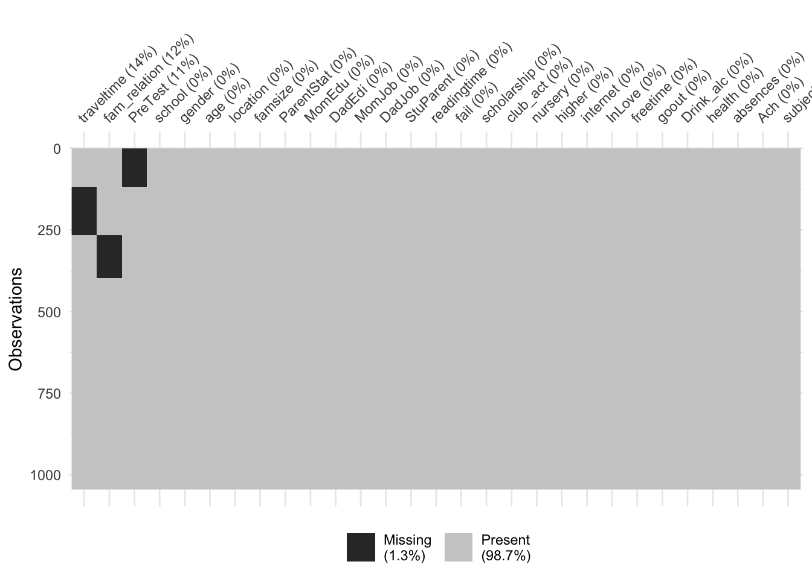
จากสภาพข้างต้นจะเห็นว่าหากผู้วิเคราะห์มีการใช้ตัวแปร ได้แก่ traveltime, fam_relation และ PreTest ในการวิเคราะห์และเลือกใช้วิธีการแก้ปัญหาค่าสูญหายด้วยการตัดข้อมูล ได้แก่ listwise หรือ pairwise deletion จะทำให้ผู้วิเคราะห์สูญเสียหน่วยข้อมูลในการวิเคราะห์ไปได้มากที่สุดถึง 396 หน่วย (ร้อยละ 37.93) ซึ่งเป็นปริมาณที่มีนัยสำคัญต่อความถูกต้องของผลการวิเคราะห์ที่จะได้
1.4 ตรวจสอบกลไกการสูญหายของข้อมูล
จากสภาพการสูญหายของข้อมูลข้างต้น จึงจำเป็นที่จะต้องมีการวิเคราะห์และแก้ไขด้วยการทดแทนค่าสูญหาย เนื้อหาส่วนนี้จะใช้การตรวจสอบ 2 วิธีการ วิธีการแรกจะตรวจสอบกลไกการสูญหายด้วย PCA และวิธีการที่สองจะใช้ logistic regression เพื่อตรวจสอบ รายละเอียดมีดังนี้ั
การตรวจสอบกลไกค่าสูญหายด้วย PCA
ผู้วิเคราะห์แปลงข้อมูลตัวแปรทั้งหมดในชุดข้อมูลให้เป็นตัวแปรแบบให้คะแนนสองค่า โดยมีค่าเท่ากับ 1 เมื่อมีข้อมูล และมีค่าเท่ากับ 0 เมื่อเป็นข้อมูลสูญหาย ผลลัพธ์ที่ได้จะได้เมทริกซ์ค่าสูญหาย (D) ดังนี้
head(dat_preproc)# A tibble: 6 × 29
school gender age location famsize ParentStat MomEdu DadEdi MomJob DadJob
<fct> <fct> <int> <fct> <fct> <fct> <int> <int> <fct> <fct>
1 obec.sec F 14 U GT3 A 4 4 at_home teach…
2 obec.sec F 13 U GT3 T 1 1 at_home other
3 obec.sec F 11 U LE3 T 1 1 at_home other
4 obec.sec F 11 U GT3 T 4 2 health servi…
5 obec.sec F 12 U GT3 T 3 3 other other
6 obec.sec M 12 U LE3 T 4 3 servic… other
# … with 19 more variables: StuParent <fct>, traveltime <int>,
# readingtime <int>, fail <int>, scholarship <fct>, club_act <fct>,
# nursery <fct>, higher <fct>, internet <fct>, InLove <fct>,
# fam_relation <int>, freetime <int>, goout <int>, Drink_alc <int>,
# health <int>, absences <int>, PreTest <int>, subject <fct>, Ach <int>glimpse(dat_preproc, width=50)Rows: 1,044
Columns: 29
$ school <fct> obec.sec, obec.sec, obec.se…
$ gender <fct> F, F, F, F, F, M, M, F, M, …
$ age <int> 14, 13, 11, 11, 12, 12, 12,…
$ location <fct> U, U, U, U, U, U, U, U, U, …
$ famsize <fct> GT3, GT3, LE3, GT3, GT3, LE…
$ ParentStat <fct> A, T, T, T, T, T, T, A, A, …
$ MomEdu <int> 4, 1, 1, 4, 3, 4, 2, 4, 3, …
$ DadEdi <int> 4, 1, 1, 2, 3, 3, 2, 4, 2, …
$ MomJob <fct> at_home, at_home, at_home, …
$ DadJob <fct> teacher, other, other, serv…
$ StuParent <fct> mother, father, mother, mot…
$ traveltime <int> 2, 1, NA, NA, 1, 1, 1, 2, N…
$ readingtime <int> 2, 2, 2, 3, 2, 2, 2, 2, 2, …
$ fail <int> 0, 0, 3, 0, 0, 0, 0, 0, 0, …
$ scholarship <fct> yes, no, yes, no, no, no, n…
$ club_act <fct> no, no, no, yes, no, yes, n…
$ nursery <fct> yes, no, yes, yes, yes, yes…
$ higher <fct> yes, yes, yes, yes, yes, ye…
$ internet <fct> no, yes, yes, yes, no, yes,…
$ InLove <fct> no, no, no, yes, no, no, no…
$ fam_relation <int> NA, 5, 4, 3, 4, NA, NA, 4, …
$ freetime <int> 3, 3, 3, 2, 3, 4, 4, 1, 2, …
$ goout <int> 4, 3, 2, 2, 2, 2, 4, 4, 2, …
$ Drink_alc <int> 1, 1, 2, 1, 1, 1, 1, 1, 1, …
$ health <int> 3, 3, 3, 5, 5, 5, 3, 1, 1, …
$ absences <int> 6, 4, 10, 2, 4, 10, 0, 6, 0…
$ PreTest <int> 5, 5, 7, 15, 6, 15, 12, 6, …
$ subject <fct> Math, Math, Math, Math, Mat…
$ Ach <int> 6, 6, 10, 15, 10, 15, 11, 6…miss_var_summary(dat_preproc)# A tibble: 29 × 3
variable n_miss pct_miss
<chr> <int> <dbl>
1 traveltime 148 14.2
2 fam_relation 130 12.5
3 PreTest 118 11.3
4 school 0 0
5 gender 0 0
6 age 0 0
7 location 0 0
8 famsize 0 0
9 ParentStat 0 0
10 MomEdu 0 0
# … with 19 more rowsdat_preproc %>%
bind_shadow() %>%
glimpse()Rows: 1,044
Columns: 58
$ school <fct> obec.sec, obec.sec, obec.sec, obec.sec, obec.sec, obec…
$ gender <fct> F, F, F, F, F, M, M, F, M, M, F, F, M, M, M, F, F, F, …
$ age <int> 14, 13, 11, 11, 12, 12, 12, 13, 11, 11, 11, 11, 11, 11…
$ location <fct> U, U, U, U, U, U, U, U, U, U, U, U, U, U, U, U, U, U, …
$ famsize <fct> GT3, GT3, LE3, GT3, GT3, LE3, LE3, GT3, LE3, GT3, GT3,…
$ ParentStat <fct> A, T, T, T, T, T, T, A, A, T, T, T, T, T, A, T, T, T, …
$ MomEdu <int> 4, 1, 1, 4, 3, 4, 2, 4, 3, 3, 4, 2, 4, 4, 2, 4, 4, 3, …
$ DadEdi <int> 4, 1, 1, 2, 3, 3, 2, 4, 2, 4, 4, 1, 4, 3, 2, 4, 4, 3, …
$ MomJob <fct> at_home, at_home, at_home, health, other, services, ot…
$ DadJob <fct> teacher, other, other, services, other, other, other, …
$ StuParent <fct> mother, father, mother, mother, father, mother, mother…
$ traveltime <int> 2, 1, NA, NA, 1, 1, 1, 2, NA, 1, 1, 3, NA, NA, 1, 1, 1…
$ readingtime <int> 2, 2, 2, 3, 2, 2, 2, 2, 2, 2, 2, 3, 1, 2, 3, 1, 3, 2, …
$ fail <int> 0, 0, 3, 0, 0, 0, 0, 0, 0, 0, 0, 0, 0, 0, 0, 0, 0, 0, …
$ scholarship <fct> yes, no, yes, no, no, no, no, yes, no, no, no, no, no,…
$ club_act <fct> no, no, no, yes, no, yes, no, no, no, yes, no, yes, ye…
$ nursery <fct> yes, no, yes, yes, yes, yes, yes, yes, yes, yes, yes, …
$ higher <fct> yes, yes, yes, yes, yes, yes, yes, yes, yes, yes, yes,…
$ internet <fct> no, yes, yes, yes, no, yes, yes, no, yes, yes, yes, ye…
$ InLove <fct> no, no, no, yes, no, no, no, no, no, no, no, no, no, n…
$ fam_relation <int> NA, 5, 4, 3, 4, NA, NA, 4, 4, NA, NA, NA, 4, 5, 4, 4, …
$ freetime <int> 3, 3, 3, 2, 3, 4, 4, 1, 2, 5, 3, 2, 3, 4, 5, 4, 2, 3, …
$ goout <int> 4, 3, 2, 2, 2, 2, 4, 4, 2, 1, 3, 2, 3, 3, 2, 4, 3, 2, …
$ Drink_alc <int> 1, 1, 2, 1, 1, 1, 1, 1, 1, 1, 1, 1, 1, 1, 1, 1, 1, 1, …
$ health <int> 3, 3, 3, 5, 5, 5, 3, 1, 1, 5, 2, 4, 5, 3, 3, 2, 2, 4, …
$ absences <int> 6, 4, 10, 2, 4, 10, 0, 6, 0, 0, 0, 4, 2, 2, 0, 4, 6, 4…
$ PreTest <int> 5, 5, 7, 15, 6, 15, 12, 6, 16, 14, 10, 10, 14, 10, 14,…
$ subject <fct> Math, Math, Math, Math, Math, Math, Math, Math, Math, …
$ Ach <int> 6, 6, 10, 15, 10, 15, 11, 6, 19, 15, 9, 12, 14, 11, 16…
$ school_NA <fct> !NA, !NA, !NA, !NA, !NA, !NA, !NA, !NA, !NA, !NA, !NA,…
$ gender_NA <fct> !NA, !NA, !NA, !NA, !NA, !NA, !NA, !NA, !NA, !NA, !NA,…
$ age_NA <fct> !NA, !NA, !NA, !NA, !NA, !NA, !NA, !NA, !NA, !NA, !NA,…
$ location_NA <fct> !NA, !NA, !NA, !NA, !NA, !NA, !NA, !NA, !NA, !NA, !NA,…
$ famsize_NA <fct> !NA, !NA, !NA, !NA, !NA, !NA, !NA, !NA, !NA, !NA, !NA,…
$ ParentStat_NA <fct> !NA, !NA, !NA, !NA, !NA, !NA, !NA, !NA, !NA, !NA, !NA,…
$ MomEdu_NA <fct> !NA, !NA, !NA, !NA, !NA, !NA, !NA, !NA, !NA, !NA, !NA,…
$ DadEdi_NA <fct> !NA, !NA, !NA, !NA, !NA, !NA, !NA, !NA, !NA, !NA, !NA,…
$ MomJob_NA <fct> !NA, !NA, !NA, !NA, !NA, !NA, !NA, !NA, !NA, !NA, !NA,…
$ DadJob_NA <fct> !NA, !NA, !NA, !NA, !NA, !NA, !NA, !NA, !NA, !NA, !NA,…
$ StuParent_NA <fct> !NA, !NA, !NA, !NA, !NA, !NA, !NA, !NA, !NA, !NA, !NA,…
$ traveltime_NA <fct> !NA, !NA, NA, NA, !NA, !NA, !NA, !NA, NA, !NA, !NA, !N…
$ readingtime_NA <fct> !NA, !NA, !NA, !NA, !NA, !NA, !NA, !NA, !NA, !NA, !NA,…
$ fail_NA <fct> !NA, !NA, !NA, !NA, !NA, !NA, !NA, !NA, !NA, !NA, !NA,…
$ scholarship_NA <fct> !NA, !NA, !NA, !NA, !NA, !NA, !NA, !NA, !NA, !NA, !NA,…
$ club_act_NA <fct> !NA, !NA, !NA, !NA, !NA, !NA, !NA, !NA, !NA, !NA, !NA,…
$ nursery_NA <fct> !NA, !NA, !NA, !NA, !NA, !NA, !NA, !NA, !NA, !NA, !NA,…
$ higher_NA <fct> !NA, !NA, !NA, !NA, !NA, !NA, !NA, !NA, !NA, !NA, !NA,…
$ internet_NA <fct> !NA, !NA, !NA, !NA, !NA, !NA, !NA, !NA, !NA, !NA, !NA,…
$ InLove_NA <fct> !NA, !NA, !NA, !NA, !NA, !NA, !NA, !NA, !NA, !NA, !NA,…
$ fam_relation_NA <fct> NA, !NA, !NA, !NA, !NA, NA, NA, !NA, !NA, NA, NA, NA, …
$ freetime_NA <fct> !NA, !NA, !NA, !NA, !NA, !NA, !NA, !NA, !NA, !NA, !NA,…
$ goout_NA <fct> !NA, !NA, !NA, !NA, !NA, !NA, !NA, !NA, !NA, !NA, !NA,…
$ Drink_alc_NA <fct> !NA, !NA, !NA, !NA, !NA, !NA, !NA, !NA, !NA, !NA, !NA,…
$ health_NA <fct> !NA, !NA, !NA, !NA, !NA, !NA, !NA, !NA, !NA, !NA, !NA,…
$ absences_NA <fct> !NA, !NA, !NA, !NA, !NA, !NA, !NA, !NA, !NA, !NA, !NA,…
$ PreTest_NA <fct> !NA, !NA, !NA, !NA, !NA, !NA, !NA, !NA, !NA, !NA, !NA,…
$ subject_NA <fct> !NA, !NA, !NA, !NA, !NA, !NA, !NA, !NA, !NA, !NA, !NA,…
$ Ach_NA <fct> !NA, !NA, !NA, !NA, !NA, !NA, !NA, !NA, !NA, !NA, !NA,…na<-function(x){
y<-ifelse(x=="NA",1,0)
return(y)
}
missing <- dat_preproc %>%
bind_shadow() %>%
dplyr::select(contains("NA")) %>%
mutate_all(na)
missing %>% dplyr::select(traveltime_NA, fam_relation_NA, PreTest_NA) # A tibble: 1,044 × 3
traveltime_NA fam_relation_NA PreTest_NA
<dbl> <dbl> <dbl>
1 0 1 0
2 0 0 0
3 1 0 0
4 1 0 0
5 0 0 0
6 0 1 0
7 0 1 0
8 0 0 0
9 1 0 0
10 0 1 0
# … with 1,034 more rowsจากนั้นดำเนินการวิเคราะห์องค์ประกอบหลัก (PCA) โดยใช้ binary matrix ดังกล่าวเป็นข้อมูลนำเข้า ผลการวิเคราะห์ที่ใช้พิจารณามีด้านล่างได้แก่ biplot และ factor score plot ผลการวิเคราะห์สรุปได้ดังนี้
จากค่า eigen value และ biplot พบว่า องค์ประกอบหลักทั้งสองสามารถอธิบายความแปรปรวนของค่าสูญหายในตัวแปรทั้ง 3 ได้คิดเป็นร้อยละ 76.29 โดยที่องค์ประกอบหลักที่ 1 สร้างจากการสูญหายใน travel_time เป็นหลัก คิดเป็นร้อยละ 71.79 รองลงมาคือการสูญหายใน fam_relation (ร้อยละ 36.578304) ส่วนองค์ประกอบหลักที่ 2 สร้างจากการสูญหายใน PreTest เป็นหลัก คิดเป็นร้อยละ 70.140625
จาก factor score plot พบว่า หน่วยข้อมูลมีค่า factor score ที่รวมกลุ่มกันโดยจำแนกเป็น 4 กลุ่ม กลุ่มแรกอยู่บริเวณจุดกำเนิดแสดงถึงหน่วยข้อมูลที่มีข้อมูลสมบูรณ์ อีก 3 กลุ่มที่เหลือมีค่า factor score ที่แตกต่างจาก 0 แสดงถึงการมีค่าสูญหาย ซึ่งจำแนกเป็น 3 รูปแบบตามตัวแปรที่มีค่าสูญหาย ผลการวิเคราะห์นี้ยังบ่งชี้ว่ากลไกการสูญหายของข้อมูลมีแนวโน้มเป็นแบบ MAR
options(scipen = 999)library(FactoMineR)
library(gridExtra)
# do PCA
pca_result<-PCA(missing, graph = F)
pca_result$eig eigenvalue
comp 1 1.15520122462094221305051178205758333206
comp 2 1.13358974607055085215279177646152675152
comp 3 0.71120902930847162970451336150290444493
comp 4 0.00000000000000000000000000000001840140
comp 5 0.00000000000000000000000000000001140040
comp 6 0.00000000000000000000000000000001140040
comp 7 0.00000000000000000000000000000001140040
comp 8 0.00000000000000000000000000000001140040
comp 9 0.00000000000000000000000000000001140040
comp 10 0.00000000000000000000000000000001140040
comp 11 0.00000000000000000000000000000001140040
comp 12 0.00000000000000000000000000000001140040
comp 13 0.00000000000000000000000000000001140040
comp 14 0.00000000000000000000000000000001140040
comp 15 0.00000000000000000000000000000001140040
comp 16 0.00000000000000000000000000000001140040
comp 17 0.00000000000000000000000000000001140040
comp 18 0.00000000000000000000000000000001140040
comp 19 0.00000000000000000000000000000001140040
comp 20 0.00000000000000000000000000000001140040
comp 21 0.00000000000000000000000000000001140040
comp 22 0.00000000000000000000000000000001140040
comp 23 0.00000000000000000000000000000001140040
comp 24 0.00000000000000000000000000000001140040
comp 25 0.00000000000000000000000000000001140040
comp 26 0.00000000000000000000000000000001140040
comp 27 0.00000000000000000000000000000001140040
comp 28 0.00000000000000000000000000000001140040
comp 29 0.00000000000000000000000000000001128006
percentage of variance
comp 1 38.5067074873651904454163741320371627808
comp 2 37.7863248690188129330636002123355865479
comp 3 23.7069676436160001742337044561281800270
comp 4 0.0000000000000000000000000000006133800
comp 5 0.0000000000000000000000000000003800133
comp 6 0.0000000000000000000000000000003800133
comp 7 0.0000000000000000000000000000003800133
comp 8 0.0000000000000000000000000000003800133
comp 9 0.0000000000000000000000000000003800133
comp 10 0.0000000000000000000000000000003800133
comp 11 0.0000000000000000000000000000003800133
comp 12 0.0000000000000000000000000000003800133
comp 13 0.0000000000000000000000000000003800133
comp 14 0.0000000000000000000000000000003800133
comp 15 0.0000000000000000000000000000003800133
comp 16 0.0000000000000000000000000000003800133
comp 17 0.0000000000000000000000000000003800133
comp 18 0.0000000000000000000000000000003800133
comp 19 0.0000000000000000000000000000003800133
comp 20 0.0000000000000000000000000000003800133
comp 21 0.0000000000000000000000000000003800133
comp 22 0.0000000000000000000000000000003800133
comp 23 0.0000000000000000000000000000003800133
comp 24 0.0000000000000000000000000000003800133
comp 25 0.0000000000000000000000000000003800133
comp 26 0.0000000000000000000000000000003800133
comp 27 0.0000000000000000000000000000003800133
comp 28 0.0000000000000000000000000000003800133
comp 29 0.0000000000000000000000000000003760021
cumulative percentage of variance
comp 1 38.50671
comp 2 76.29303
comp 3 100.00000
comp 4 100.00000
comp 5 100.00000
comp 6 100.00000
comp 7 100.00000
comp 8 100.00000
comp 9 100.00000
comp 10 100.00000
comp 11 100.00000
comp 12 100.00000
comp 13 100.00000
comp 14 100.00000
comp 15 100.00000
comp 16 100.00000
comp 17 100.00000
comp 18 100.00000
comp 19 100.00000
comp 20 100.00000
comp 21 100.00000
comp 22 100.00000
comp 23 100.00000
comp 24 100.00000
comp 25 100.00000
comp 26 100.00000
comp 27 100.00000
comp 28 100.00000
comp 29 100.00000# eigen values and Cumulative percentage of variance
round(pca_result$eig %>% head(),4) eigenvalue percentage of variance cumulative percentage of variance
comp 1 1.1552 38.5067 38.5067
comp 2 1.1336 37.7863 76.2930
comp 3 0.7112 23.7070 100.0000
comp 4 0.0000 0.0000 100.0000
comp 5 0.0000 0.0000 100.0000
comp 6 0.0000 0.0000 100.0000# factor loading matrix
round(pca_result$var$coord %>% data.frame() %>% drop_na(),4) %>%
filter(Dim.1!=0) Dim.1 Dim.2 Dim.3 Dim.4 Dim.5
traveltime_NA -0.8473 -0.1859 0.4975 0 0
fam_relation_NA 0.6048 -0.6306 0.4863 0 0
PreTest_NA 0.2674 0.8375 0.4766 0 0# access factor scores (coordinate of individuals)
p1 <- plot(pca_result, choix = "var")
missing_factorscore <- pca_result$ind$coord
p2 <- missing_factorscore %>% data.frame() %>%
ggplot(aes(x = Dim.1, y=Dim.2))+
geom_jitter(width=0.3, height=0.3, alpha=0.5)+
ggtitle("factor score plot")
grid.arrange(p1,p2,ncol=2)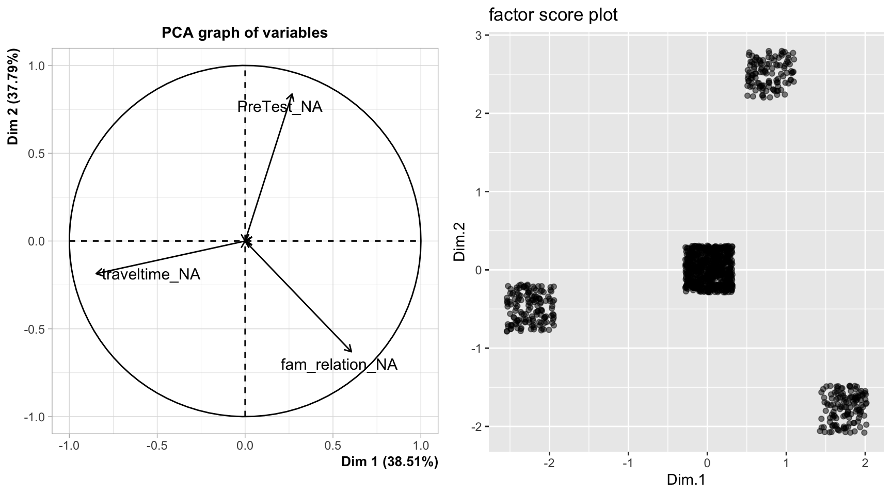
ตัวแรกเรียกว่า biplot ใช้นำเสนอความสัมพันธ์ระหว่างองค์ประกอบหลัก (2 องค์ประกอบแรก) กับตัวแปรเดิม ว่ามีความหมายอย่างไร การพิจารณาแผนภาพดังกล่าวให้พิจารณาจาก
- ความยาวของ factor loading vector ของตัวแปรบ่งบอกความสำคัญของตัวแปรสังเกตได้แต่ละตัวในการสร้างองค์ประกอบหลัก
- ภาพฉาย (projection) ของ factor loading vector บนแกนขององค์ประกอบหลัก ใช้แสดงความสำคัญของตัวแปรสังเกตได้แต่ละตัวภายในแต่ละองค์ประกอบ
- มุมระหว่างเวกเตอร์ของ factor loading แสดงความสัมพันธ์ระหว่างตัวแปรสังเกตได้ จากรูปจะเห็นว่าการสูญหายในตัวแปรทั้งสามมีแนวโน้มที่จะไม่สัมพันธ์กัน
- การรวมกลุ่มของตำแหน่งของ factor loading บนแผนภาพ ตัวแปรสังเกตได้ที่อยู่ใกล้กันบนแผนภาพมีแนวโน้มที่จะสัมพันธ์กัน
ผู้วิเคราะห์ดำเนินการวิเคราะห์เพื่อยืนยันกลไกลการสูญหายแบบ MAR โดยใช้ logistic regression อีกครั้งหนึ่ง การวิเคราะห์นี้จำแนกเป็น 3 โมเดล ตามตัวแปรที่มีค่าสูญหายแต่ละตัว ดังนี้
# defined preprocess
rec1 <- recipe(PreTest_NA ~., data=dat_na) %>%
step_rm(traveltime_NA,fam_relation_NA, PreTest) %>%
step_normalize(all_numeric_predictors()) %>%
step_impute_knn(traveltime, fam_relation) %>%
step_dummy(all_nominal_predictors())
rec2 <- recipe(traveltime_NA ~., data=dat_na) %>%
step_rm(PreTest_NA, fam_relation_NA, traveltime) %>%
step_normalize(all_numeric_predictors())%>%
step_impute_knn(PreTest, fam_relation) %>%
step_dummy(all_nominal_predictors())
rec3<- recipe(fam_relation_NA ~., data=dat_na) %>%
step_rm(PreTest_NA, traveltime_NA, fam_relation) %>%
step_normalize(all_numeric_predictors())%>%
step_impute_knn(traveltime, PreTest) %>%
step_dummy(all_nominal_predictors())
# defined model
logistic_mod <- logistic_reg(penalty = tune(),
mixture = tune()) %>%
set_engine("glmnet") %>%
set_mode("classification")
# defined workflow
folds<-vfold_cv(data = dat_na, v=10)
library(doMC)
registerDoMC(cores=15)
na_result1 <- workflow() %>%
add_recipe(rec1) %>%
add_model(logistic_mod) %>%
tune_grid(resamples = folds,
grid=50)
na_result2 <- workflow() %>%
add_recipe(rec2) %>%
add_model(logistic_mod) %>%
tune_grid(resamples = folds,
grid=50)
na_result3 <- workflow() %>%
add_recipe(rec3) %>%
add_model(logistic_mod) %>%
tune_grid(resamples = folds,
grid=50)
best1<-show_best(na_result1, n=1, metric = "roc_auc")
best2<-show_best(na_result2, n=1, metric = "roc_auc")
best3<-show_best(na_result3, n=1, metric = "roc_auc")
best1 %>% bind_rows(best2,best3)# A tibble: 3 × 8
penalty mixture .metric .estimator mean n std_err .config
<dbl> <dbl> <chr> <chr> <dbl> <int> <dbl> <chr>
1 0.000166 0.469 roc_auc binary 0.615 10 0.0274 Preprocessor1_Model23
2 0.0101 0.499 roc_auc binary 0.696 10 0.0254 Preprocessor1_Model24
3 0.00679 0.709 roc_auc binary 0.666 10 0.0156 Preprocessor1_Model35ผลการวิเคราะห์ข้างต้นแสดงให้เห็นว่าโมเดลทำนายค่าสูญหายในตัวแปรทั้งสามมีประสิทธิภาพการทำนายพิจารณาจากค่า roc_auc อยู่ในช่วงร้อยละ 57 - 69 ซึ่งแสดงว่ามีตัวแปรในชุดข้อมูลที่สามารถทำได้การสูญหายในตัวแปรทั้งสามได้พอสมควร นอกจากนี้เมื่อพิจารณาผลการวิเคราะห์ด้วย Variable Importance Plots พบว่ามีตัวแปรหลายตัวที่มีความสัมพันธ์กับการสูญหายในตัวแปรทั้ง 3 อย่างมีนัยสำคัญ (vip package) จากผลการวิเคราะห์ส่วนนี้สรุปได้ว่า การสูญหายในตัวแปรทั้ง 3 มีแนวโน้มเป็นแบบ MAR
## finalized best model
na1 <- workflow() %>%
add_recipe(rec1) %>%
add_model(logistic_mod) %>%
finalize_workflow(best1) %>%
fit(dat_na)
na2 <- workflow() %>%
add_recipe(rec1) %>%
add_model(logistic_mod) %>%
finalize_workflow(best1) %>%
fit(dat_na)
na3 <- workflow() %>%
add_recipe(rec1) %>%
add_model(logistic_mod) %>%
finalize_workflow(best1) %>%
fit(dat_na)
# create Variable Importance Plots
library(vip)
Attaching package: 'vip'The following object is masked from 'package:utils':
vip1<-vip(na1%>%extract_fit_engine(),geom="point")+
theme(text = element_text(size=5))
p2<-vip(na2%>%extract_fit_engine(),geom="point")+
theme(text = element_text(size=5))
p3<-vip(na3%>%extract_fit_engine(),geom="point")+
theme(text = element_text(size=5))
grid.arrange(p1,p2,p3, ncol=3)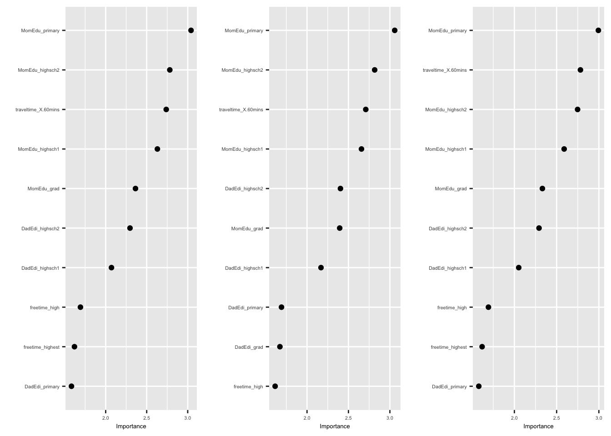
1.5 การทดแทนค่าสูญหาย (แถม)
ในกรณีที่ค่าสูญหายมีจำนวนมาก วิธีการตัดข้อมูลออกจากการวิเคราะห์ หรือการทดแทนค่าสูญหายด้วยค่าเฉลี่ยจะไม่ใช่วิธีการที่ควรนำมาใช้แก้ปัญหา ภายใต้สถานการณ์นี้ผู้วิเคราะห์ควรพิจารณาปัจจัยตัวที่สองประกอบการเลือกวิธีการแก้ปัญหาที่เหมาะสมด้วย ได้แก่ กลไกการสูญหายของข้อมูล โดยหากกลไกการสูญหายเป็นแบบ MAR ผู้วิเคราะห์สามารถเลือกใช้เทคนิคได้หลายตัว เช่น การทดแทนค่าสูญหายด้วยการวิเคราะห์การถดถอย การทดแทนค่าสูญหายด้วยอัลกอริทึม K-nearest neighbors การทดแทนค่าสูญหายแบบหลายค่า การทดแทนค่าสูญหายด้วยวิธีการแบบเบย์ และการทดแทนค่าสูญหายด้วยอัลกอริทึมการเรียนรู้ของเครื่องอื่น ๆ
library(simputation)
imputed_knn <- recipe(Ach ~., data=dat_na) %>%
step_rm(traveltime_NA,fam_relation_NA, PreTest_NA) %>%
step_impute_knn(traveltime, fam_relation, PreTest) %>%
prep(NULL) %>%
juice()
imputed_bag <- recipe(Ach ~., data=dat_na) %>%
step_rm(traveltime_NA,fam_relation_NA, PreTest_NA) %>%
step_impute_bag(traveltime, fam_relation, PreTest) %>%
prep(NULL) %>%
juice()ผู้วิเคราะห์ทดลองเปรียบเทียบผลการทดแทนค่าสูญหายจากวิธี Bagged Tree
cor(full_preproc$PreTest, imputed_bag$PreTest)[1] 0.963384table(full_preproc$traveltime, imputed_bag$traveltime)
<15mins 15-30mins 30-60mins >60mins
<15mins 608 15 0 0
15-30mins 9 311 0 0
30-60mins 4 1 72 0
>60mins 1 3 0 20table(full_preproc$fam_relation, imputed_bag$fam_relation)
worst bad fair good very good
worst 30 0 0 0 0
bad 0 45 0 2 0
fair 0 0 162 4 3
good 0 0 5 505 2
very good 0 0 0 11 2752.1 จัดกลุ่มนักเรียนด้วยตัวแปรที่มี
ผลการวิเคราะห์ส่วนนี้แสดงการจัดกลุ่มนักเรียนด้วยอัลกอริทึม kprototype อัลกอริทึมดังกล่าวใช้สำหรับจัดกลุ่มข้อมูลเหมือนกับ kmeans แต่มีจุดเด่นคือสามารถใช้จัดกลุ่มข้อมูลโดยอิงกับข้อมูลหลากหลายประเภทพร้อมกัน แตกต่างจาก kmeans ที่สามารถใช้กับข้อมูลเชิงปริมาณเท่านั้น อัลกอริทึมนี้นำเสนอโดย Zhexue Huang (1997) สามารถมองเป็นอัลกอริทึมที่รวมกันระหว่าง kmeans และ kmodes clustering รายละเอียดของอัลกอริทึมเป็นดังนี้
- กำหนดจำนวนกลุ่ม ให้มีค่าเท่ากับ k
- แบ่งชุดข้อมูลออกเป็น k ส่วนอย่างสุ่ม (เรียกว่า initial prototype)
- คำนวณคะแนนความแตกต่าง (dissimilarity) ระหว่างหน่วยข้อมูลแต่ละหน่วยกับ initial prototype ที่สร้างขึ้นในข้อ 2. ทั้งนี้คะแนนความแตกต่างดังกล่าวจะต้องคำนวณจากข้อมูลเชิงปริมาณและจัดประเภท คะแนนจึงคำนวณจากค่าเฉลี่ยถ่วงน้ำหนักระหว่างระยะห่างของข้อมูลเชิงปริมาณ เช่น euclidean distance กับระยะห่างของข้อมูลจัดประเภท เช่น Hamming distance คะแนนความแตกต่างดังกล่าวเป็นดังนี้ \(Dis(x1,x2) = w \times Euclid(x1_{cont},x2_{cont}) + (1-w) \times Hamming(x1_{cat}, x2_{cat})\)
- ย้ายกลุ่มให้กับหน่วยข้อมูลไปยัง prototype ที่มีคะแนนความแตกต่างต่ำที่สุด
- ทวนซ้ำขั้น 3 และ 4 จนกระทั้งไม่มีการเปลี่ยนกลุ่มของหน่วยข้อมูล หรือครบจำนวนรอบการทวนซ้ำที่กำหนด
หมายเหตุ การคำนวณคะแนนความแตกต่างในขั้นที่ 3 สามารถเลือกใช้ระยะห่างแบบ Gower ก็ได้ ระยะห่างนี้ถูกนำเสนอโดย John C. Gower (1971) เพื่อใช้เปรียบเทียบความแตกต่างระหว่างหน่วยข้อมูลจากตัวแปรที่มีหลายประเภท
Gower distance (x, y) = \(\frac{\sum w_i * d_i(x, y)}{\sum w_i}\)
เมื่อ \(x\) และ \(y\) คือหน่วยข้อมูล, \(w_i\) คือน้ำหนักของตัวแปรที่ i (ค่าเริ่มต้นเท่ากับ 1.00) และ \(d_i(x,y)\) คือความแตกต่าง/ระยะห่าง ระหว่าง \(x\) กับ \(y\) ภายใต้ตัวแปรที่ i
The dissimilarity $d_i(x, y)$ is calculated differently for different data types:
Continuous variables: The dissimilarity is the normalized absolute difference between the two data points:
\(d_i(x, y)\) = \(\frac{|x_i - y_i|}{\max(x_i) - \min(x_i)}\)
Ordinal variables: The dissimilarity is the normalized absolute difference between the two data points, considering the variable’s rank:
\(d_i(x, y)\) = \(\frac{|\text{rank}(x_i) - \text{rank}(y_i)|}{\max(\text{rank}(x_i)) - \min(\text{rank}(x_i))}\)
Categorical variables: The dissimilarity is 0 if \(x_i = y_i\), and 1 otherwise:
\(d_i(x, y)\) = \(\begin{cases} 1 & \text{if } x_i \neq y_i \\ 0 & \text{otherwise} \end{cases}\)
library(FactoMineR)
library(factoextra)
library(ggrepel)
library(cluster)
#do cluster analysis with mixed variable
library(clustMixType)
k_range <- 2:10
tot_withinSS <- numeric(length(k_range))
sil_scores <- numeric(length(k_range))
imputed_bag_scaled<-recipe(Ach~.,data=imputed_bag) %>%
step_normalize(all_numeric()) %>%
prep(NULL) %>%
juice()
gower_dist <- daisy(imputed_bag_scaled, metric = "gower")
for(k in k_range){
kproto_res <- kproto(imputed_bag_scaled, k)
tot_withinSS[k-1]<-kproto_res$tot.withinss
sil_scores[k-1]<-mean(silhouette(kproto_res$cluster,
gower_dist)[,3])
}
# Plot the total within-cluster sum of squares for each k
plot(k_range, tot_withinSS, type = "b", xlab = "Number of clusters (k)", ylab = "Total within-cluster sum of squares", main = "Elbow Method")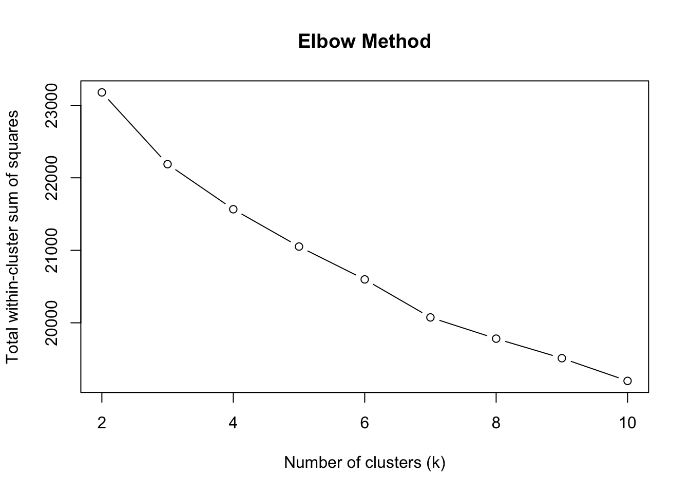
# Plot the average silhouette width for each k
plot(k_range, sil_scores, type = "b", xlab = "Number of clusters (k)", ylab = "Average silhouette width", main = "Silhouette Method")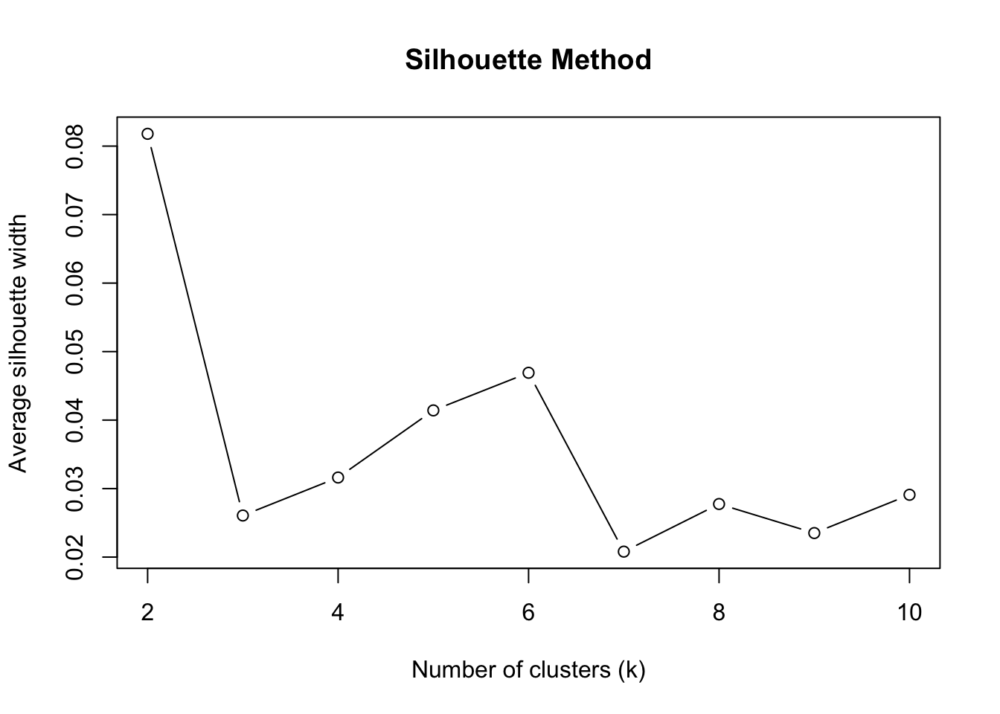
ผลการวิเคราะห์ข้างต้นแสดงให้เห็นว่า จำนวนกลุ่มที่เหมาะสมน่าจะอยู่ในช่วง 2-4 กลุ่ม ขั้นตอนต่อไปคือการวิเคราะห์ profile ของแต่ละกลุ่ม เพื่อพิจารณาเลือกจำนวนกลุ่มที่เหมาะสมอีกครั้งหนึ่ง ผลการวิเคราะห์ที่ได้พบว่า…
cluster_result2 <- kproto(imputed_bag, k=2)# NAs in variables:
school gender age location famsize ParentStat
0 0 0 0 0 0
MomEdu DadEdi MomJob DadJob StuParent traveltime
0 0 0 0 0 0
readingtime fail scholarship club_act nursery higher
0 0 0 0 0 0
internet InLove fam_relation freetime goout Drink_alc
0 0 0 0 0 0
health absences PreTest subject Ach
0 0 0 0 0
0 observation(s) with NAs.
Estimated lambda: 25.08972
0 observation(s) with NAs.cluster_result3 <- kproto(imputed_bag, k=3)# NAs in variables:
school gender age location famsize ParentStat
0 0 0 0 0 0
MomEdu DadEdi MomJob DadJob StuParent traveltime
0 0 0 0 0 0
readingtime fail scholarship club_act nursery higher
0 0 0 0 0 0
internet InLove fam_relation freetime goout Drink_alc
0 0 0 0 0 0
health absences PreTest subject Ach
0 0 0 0 0
0 observation(s) with NAs.
Estimated lambda: 25.08972
0 observation(s) with NAs.cluster_result4 <- kproto(imputed_bag, k=4)# NAs in variables:
school gender age location famsize ParentStat
0 0 0 0 0 0
MomEdu DadEdi MomJob DadJob StuParent traveltime
0 0 0 0 0 0
readingtime fail scholarship club_act nursery higher
0 0 0 0 0 0
internet InLove fam_relation freetime goout Drink_alc
0 0 0 0 0 0
health absences PreTest subject Ach
0 0 0 0 0
0 observation(s) with NAs.
Estimated lambda: 25.08972
0 observation(s) with NAs.imputed_bag$clus2 <- cluster_result2$cluster
imputed_bag$clus3 <- cluster_result3$cluster
imputed_bag$clus4 <- cluster_result4$cluster
# preprocessing
rec_cluster2 <- recipe(clus2 ~., data=imputed_bag) %>%
step_rm(clus3, clus4) %>%
step_mutate(clus2 = factor(clus2)) %>%
step_normalize(all_numeric_predictors())
rec_cluster3 <- recipe(clus3 ~., data=imputed_bag) %>%
step_rm(clus2, clus4) %>%
step_mutate(clus3 = factor(clus3)) %>%
step_normalize(all_numeric_predictors())
rec_cluster4 <- recipe(clus4 ~., data=imputed_bag) %>%
step_rm(clus2, clus3) %>%
step_mutate(clus4 = factor(clus4)) %>%
step_normalize(all_numeric_predictors())
# defined model
rf_mod <- rand_forest(mtry=tune(),
trees = 500,
min_n = tune()) %>%
set_engine("ranger", importance = "permutation") %>%
set_mode("classification")
# defined workflow
folds<-vfold_cv(data = imputed_bag, v=10)
library(doMC)
registerDoMC(cores=15)
cluster2_result <- workflow() %>%
add_recipe(rec_cluster2) %>%
add_model(rf_mod) %>%
tune_grid(resamples = folds,
grid=50)i Creating pre-processing data to finalize unknown parameter: mtrycluster3_result <- workflow() %>%
add_recipe(rec_cluster3) %>%
add_model(rf_mod) %>%
tune_grid(resamples = folds,
grid=50)i Creating pre-processing data to finalize unknown parameter: mtrycluster4_result <- workflow() %>%
add_recipe(rec_cluster4) %>%
add_model(rf_mod) %>%
tune_grid(resamples = folds,
grid=50)i Creating pre-processing data to finalize unknown parameter: mtrybest1<-show_best(cluster2_result, n=1, metric = "roc_auc")
best2<-show_best(cluster3_result , n=1, metric = "roc_auc")
best3<-show_best(cluster4_result , n=1, metric = "roc_auc")
best1 %>% bind_rows(best2, best3)# A tibble: 3 × 8
mtry min_n .metric .estimator mean n std_err .config
<int> <int> <chr> <chr> <dbl> <int> <dbl> <chr>
1 9 7 roc_auc binary 0.996 10 0.000964 Preprocessor1_Model22
2 13 3 roc_auc hand_till 0.991 10 0.00224 Preprocessor1_Model22
3 7 7 roc_auc hand_till 0.968 10 0.00478 Preprocessor1_Model30## finalized best model
clus2 <- workflow() %>%
add_recipe(rec_cluster2) %>%
add_model(rf_mod) %>%
finalize_workflow(best1) %>%
fit(imputed_bag)
clus3 <- workflow() %>%
add_recipe(rec_cluster3) %>%
add_model(rf_mod) %>%
finalize_workflow(best2) %>%
fit(imputed_bag)
clus4 <- workflow() %>%
add_recipe(rec_cluster4) %>%
add_model(rf_mod) %>%
finalize_workflow(best3) %>%
fit(imputed_bag)
# create Variable Importance Plots
p1<-vip(clus2%>%extract_fit_engine(),geom="point", num_features = 15)+
theme(text = element_text(size=7))+
ggtitle("2 clusters")
p2<-vip(clus3%>%extract_fit_engine(),geom="point", num_features = 15)+
theme(text = element_text(size=7))+
ggtitle("3 clusters")
p3<-vip(clus4%>%extract_fit_engine(),geom="point", num_features = 15)+
theme(text = element_text(size=7))+
ggtitle("4 clusters")
grid.arrange(p1,p2,p3, ncol=3)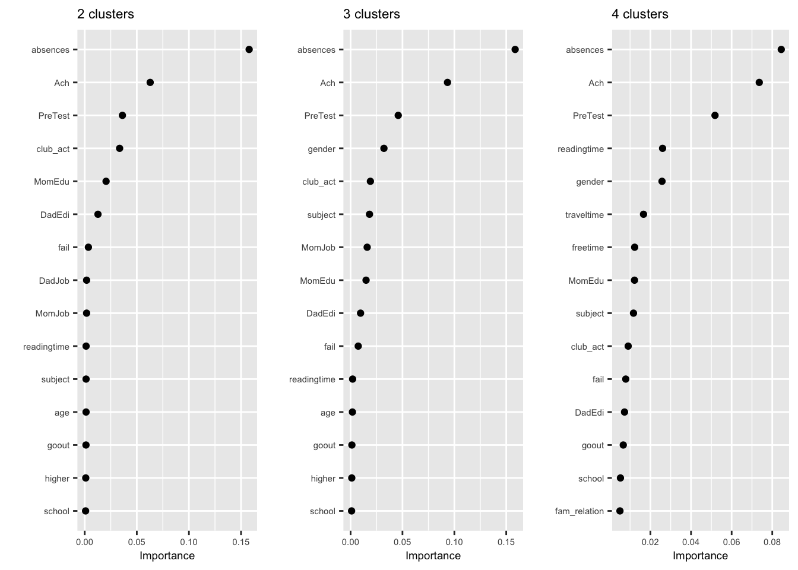
# 3 clusters
p1<-imputed_bag %>%
ggplot(aes(x=factor(clus3), y=absences))+
geom_boxplot()
p2<-imputed_bag %>%
ggplot(aes(x=factor(clus3), y=Ach))+
geom_boxplot()
p3<-imputed_bag %>%
ggplot(aes(x=factor(clus3), y=PreTest))+
geom_boxplot()
p4<-imputed_bag %>%
ggplot(aes(x=factor(clus3), y=as.numeric(gender)))+
geom_jitter(aes(col = gender))
p5<-imputed_bag %>%
ggplot(aes(x=factor(clus3), y=as.numeric(subject)))+
geom_jitter(aes(col = subject))
p6<-imputed_bag %>%
ggplot(aes(x=factor(clus3), y=as.numeric(goout)))+
geom_jitter(aes(col = goout))
grid.arrange(p1,p2,p3,p4,p5,p6,ncol=2)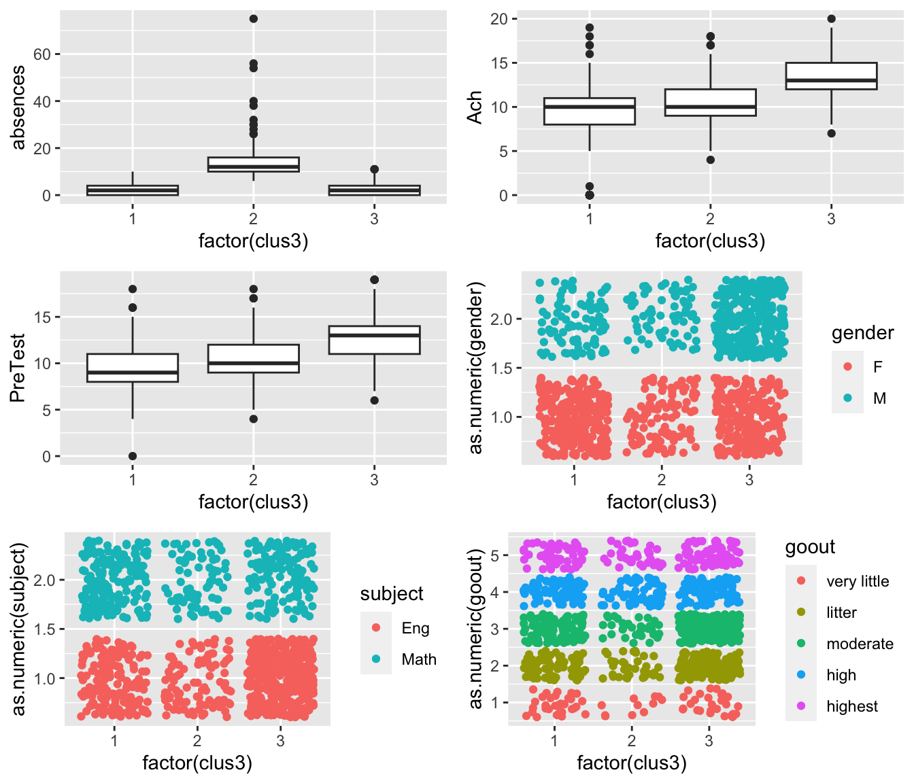
# 4 clusters
p1<-imputed_bag %>%
ggplot(aes(x=factor(clus4), y=absences))+
geom_boxplot()
p2<-imputed_bag %>%
ggplot(aes(x=factor(clus4), y=Ach))+
geom_boxplot()
p3<-imputed_bag %>%
ggplot(aes(x=factor(clus4), y=PreTest))+
geom_boxplot()
p4<-imputed_bag %>%
ggplot(aes(x=factor(clus4), y=as.numeric(MomEdu)))+
geom_jitter(aes(col = MomEdu))
p5<-imputed_bag %>%
ggplot(aes(x=factor(clus4), y=as.numeric(DadEdi)))+
geom_jitter(aes(col = DadEdi))
p6<-imputed_bag %>%
ggplot(aes(x=factor(clus4), y=as.numeric(school)))+
geom_jitter(aes(col = school))
grid.arrange(p1,p2,p3,p4,p5,p6,ncol=2)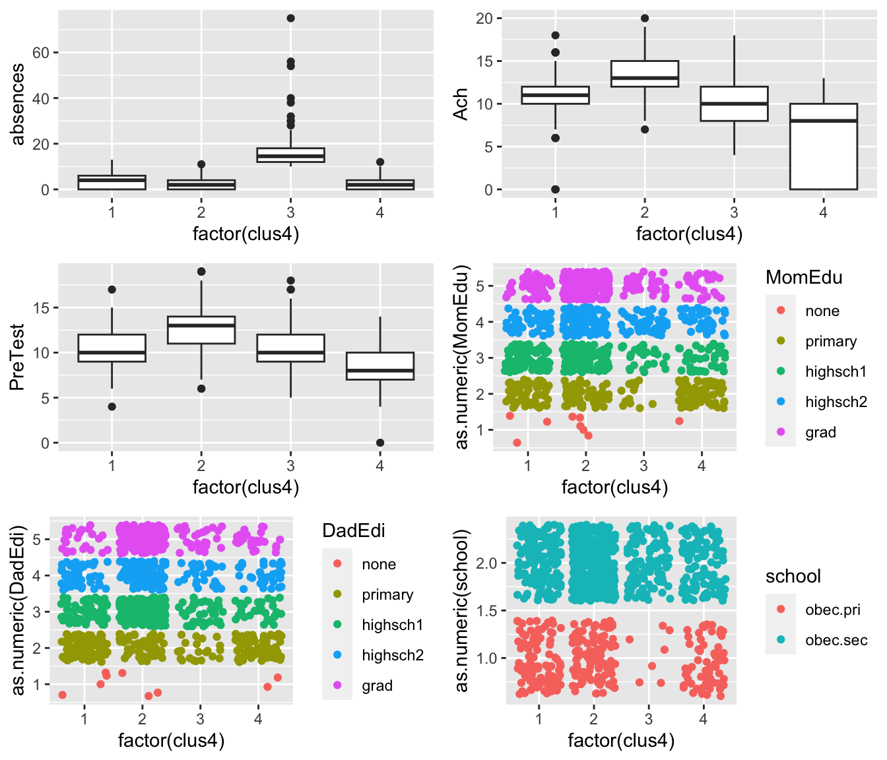
ผลการวิเคราะห์ข้างต้นควรเลือกกี่กลุ่ม และแต่ละกลุ่มมี profile เป็นอย่างไร?
2.2 พัฒนาโมเดลทำนายผลสัมฤทธิ์ทางการเรียน
การวิเคราะห์ส่วนนี้ผู้วิเคราะห์เลือกอัลกอริทึมมาเปรียบเทียบกัน 3 ตัวได้แก่
regularized logistic regression
random forest
gradient boosting
Data Preprocessing
ผลวิเคราะห์ส่วนนี้ผู้วิเคราะห์ออกแบบให้ใช้ classification model ทั้งนี้เพื่อให้ผลการทำนายมีความหมายที่เป็นรูปธรรมมากกว่าการทำนายด้วยคะแนนสอบปกติ
temp <- imputed_bag %>%
mutate(Ach_class = factor(ifelse(Ach>=15,3,ifelse(Ach<=5,1,2))))
table(temp$Ach_class)
1 2 3
63 777 204 การแบ่งระดับผลสัมฤทธิ์ข้างต้นจะเห็นว่าก่อให้เกิดปัญหา Imbalance class ขึ้น สภาพดังกล่าวอาจทำให้การวิเคราะห์มีประสิทธิภาพการทำนายที่ต่ำกว่าที่ควรจะเป็น ดังนั้น job แรกของการวิเคราะห์จะพิจารณาผลกระทบของ imbalance class ดังกล่าวก่อน วิธีการแก้ไขที่ใช้ในตัวอย่างจะใช้ SMOTE (synthetic minority over-sampling) ซึ่งเป็นวิธีการพื้นฐานตัวหนึ่งที่ใช้แก้ปัญหา imbalance class ดังกล่าว
SMOTE จะสร้างข้อมูลสังเคราะห์ (synthetic data) ให้กับ minority class โดยใช้การ interpolate ระหว่างหน่วยข้อมูลของกลุ่ม minority ภายใต้ปริภูมิของ feature หลักสำคัญของการสร้างข้อมูลสังเคราะห์คือ จะสร้างข้อมูลใหม่ที่เหมือนกับหน่วยข้อมูลเดิมในกลุ่ม minority แต่จะไม่เท่ากับหน่วยข้อมูลเดิมดังกล่าว ทั้งนี้เพื่อลดความลำเอียงที่จะเกิดขึ้นจากการบิดเบือนการแจกแจงของข้อมูล อัลกอริทึมดังกล่าวจะดำเนินไปเพื่อสร้างข้อมูลสังเคราะห์ให้กับหน่วยข้อมูลแต่ละหน่วยของ minority class มีขั้นตอนดำเนินการในแต่ละหน่วยข้อมูล (x) ดังนี้
- กำหนด hyperparameter k (nearest neightbors)
- เลือกหน่วยข้อมูลใน minority class ภายใต้ k nearest neightbors ของ x อย่างสุ่มขึ้นมา 1 ตัว
- สร้างข้อมูลสังเคราะห์โดยใช้การ interpolate ระหว่างหน่วยข้อมูล x กับหน่วยข้อมูลที่เลือกมาในขั้นที่ 2
- ทวนซ้ำ 2 - 3 จนได้จำนวนข้อมูลสังเคราะห์ตามที่ต้องการ
ผลลัพธ์ด้านล่างแสดงให้เห็นว่าการทำ smote ช่วยให้ประสิทธิภาพการทำนายดีกว่า
library(themis)
rec_nosmote <- recipe(Ach_class ~. , data= temp) %>%
step_rm(clus2:clus4, Ach) %>%
step_normalize(all_numeric_predictors()) %>%
step_dummy(all_nominal_predictors())
rec_smote <- recipe(Ach_class ~. , data= temp) %>%
step_rm(clus2:clus4, Ach) %>%
step_normalize(all_numeric_predictors()) %>%
step_dummy(all_nominal_predictors()) %>%
step_smote(Ach_class, neighbors = 5)
logit_mod1 <- multinom_reg(penalty=tune(),
mixture=tune()) %>%
set_engine("glmnet") %>%
set_mode("classification")
logit_mod2 <- multinom_reg(penalty=tune(),
mixture=tune()) %>%
set_engine("glmnet") %>%
set_mode("classification")
wfset <- workflow_set(
preproc = list(rec_nosmote, rec_smote),
models = list(logit_mod1, logit_mod2),
cross=F
)
fold<-vfold_cv(temp, v=5, repeats=3, strata = Ach_class)
library(doMC)
registerDoMC(cores=15)
eval_metrics <- metric_set(roc_auc, sens, spec)
result_smote<-wfset %>%
workflow_map(resamples=fold,
grid=50,
metrics = eval_metrics)
result_smote %>% collect_metrics(summarise=T) %>%
filter(.metric %in% c("roc_auc")) %>%
arrange(desc(mean)) %>%
dplyr::select(wflow_id, .metric, mean, n, std_err)# A tibble: 100 × 5
wflow_id .metric mean n std_err
<chr> <chr> <dbl> <int> <dbl>
1 recipe_2_multinom_reg_2 roc_auc 0.920 15 0.00519
2 recipe_2_multinom_reg_2 roc_auc 0.918 15 0.00471
3 recipe_2_multinom_reg_2 roc_auc 0.918 15 0.00572
4 recipe_2_multinom_reg_2 roc_auc 0.917 15 0.00496
5 recipe_2_multinom_reg_2 roc_auc 0.913 15 0.00627
6 recipe_1_multinom_reg_1 roc_auc 0.907 15 0.00499
7 recipe_1_multinom_reg_1 roc_auc 0.905 15 0.00581
8 recipe_2_multinom_reg_2 roc_auc 0.904 15 0.00726
9 recipe_1_multinom_reg_1 roc_auc 0.902 15 0.00749
10 recipe_1_multinom_reg_1 roc_auc 0.901 15 0.00703
# … with 90 more rowsresult_smote %>% collect_metrics(summarise=T) %>%
filter(.metric %in% c("sens")) %>%
arrange(desc(mean)) %>%
dplyr::select(wflow_id, .metric, mean, n, std_err)# A tibble: 100 × 5
wflow_id .metric mean n std_err
<chr> <chr> <dbl> <int> <dbl>
1 recipe_2_multinom_reg_2 sens 0.791 15 0.0102
2 recipe_2_multinom_reg_2 sens 0.789 15 0.00819
3 recipe_2_multinom_reg_2 sens 0.782 15 0.00700
4 recipe_2_multinom_reg_2 sens 0.775 15 0.0101
5 recipe_2_multinom_reg_2 sens 0.770 15 0.0134
6 recipe_2_multinom_reg_2 sens 0.754 15 0.0139
7 recipe_2_multinom_reg_2 sens 0.743 15 0.0173
8 recipe_2_multinom_reg_2 sens 0.740 15 0.0179
9 recipe_2_multinom_reg_2 sens 0.722 15 0.0157
10 recipe_2_multinom_reg_2 sens 0.712 15 0.0154
# … with 90 more rowsผลการสร้างข้อมูลสังเคราะห์ด้วย SMOTE
Ach_class
1 2 3
777 777 777 Training
ขั้นตอนต่อไปคือการ train โมเดลทั้งสามในข้างต้น ดังนี้
split <- initial_split(temp, prop=0.75, strata=Ach_class)
train <- training(split)
test <- testing(split)
# preprocessing
rec_smote <- recipe(Ach_class ~. , data= train) %>%
step_rm(clus2:clus4, Ach) %>%
step_normalize(all_numeric_predictors()) %>%
step_dummy(all_nominal_predictors()) %>%
step_smote(Ach_class, neighbors = 5)
# model specification
### regularized logistic regression
logit_mod <- multinom_reg(penalty=tune(),
mixture=tune()) %>%
set_engine("glmnet") %>%
set_mode("classification")
### random forest (ุ6.3 secs)
rf_mod <- rand_forest(trees=300,
mtry=tune(),
min_n=tune()
) %>%
set_engine("ranger", importance = "permutation") %>%
set_mode("classification")
### KNN (4.44 sec per round)
knn_mod <- nearest_neighbor(neighbors = tune(),
weight_func = tune(),
dist_power = 2) %>%
set_engine("kknn") %>%
set_mode("classification")
### gradient boosting (10.42 secs per round)
library(xgboost)
boost_mod <- boost_tree(trees=300,
min_n = tune(),
tree_depth = tune(),
learn_rate = tune()
) %>%
set_engine("xgboost") %>%
set_mode("classification")
# create workflowset
wfset <- workflow_set(
preproc = list(rec_smote),
models = list(logit_mod, knn_mod, rf_mod)
)
fold<-vfold_cv(train, v=5, repeats=2, strata = Ach_class)
# tuning hyperparameters
eval_metrics <- metric_set(roc_auc, sens, spec)
library(doMC)
registerDoMC(cores=15)
start <- Sys.time()
result <- wfset %>%
workflow_map(resamples = fold,
grid = 50,
control = control_grid(save_pred = TRUE),
metrics = eval_metrics)
paste("time usage", round(Sys.time() - start,2), "mins")[1] "time usage 6.93 mins"ผลการปรับแต่ง hyperparameter ของโมเดลข้างต้นเป็นดังนี้
result# A workflow set/tibble: 3 × 4
wflow_id info option result
<chr> <list> <list> <list>
1 recipe_multinom_reg <tibble [1 × 4]> <opts[4]> <tune[+]>
2 recipe_nearest_neighbor <tibble [1 × 4]> <opts[4]> <tune[+]>
3 recipe_rand_forest <tibble [1 × 4]> <opts[4]> <tune[+]>result %>% autoplot()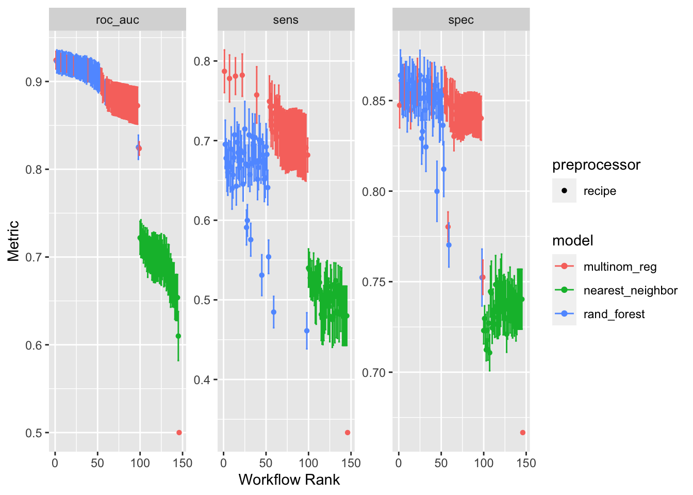
result %>% extract_workflow_set_result(id = "recipe_multinom_reg") %>%
autoplot()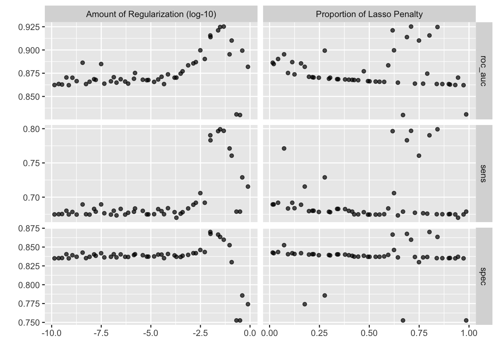
2.3 ปัจจัยที่มีความสำคัญหรือปัจจัยเสี่ยงต่อความสำเร็จในการเรียน
best <- show_best(result %>% extract_workflow_set_result(id = "recipe_multinom_reg"),
n=1, metric = "sens")
best# A tibble: 1 × 8
penalty mixture .metric .estimator mean n std_err .config
<dbl> <dbl> <chr> <chr> <dbl> <int> <dbl> <chr>
1 0.108 0.401 sens macro 0.787 10 0.0163 Preprocessor1_Model21## last fit
logit_result <- workflow() %>%
add_recipe(rec_smote) %>%
add_model(logit_mod) %>%
finalize_workflow(best) %>%
last_fit(split)
logit_result %>% collect_metrics(summarise=T)# A tibble: 2 × 4
.metric .estimator .estimate .config
<chr> <chr> <dbl> <chr>
1 accuracy multiclass 0.660 Preprocessor1_Model1
2 roc_auc hand_till 0.920 Preprocessor1_Model1logit_result %>% collect_predictions() %>%
conf_mat(truth = Ach_class , estimate = .pred_class) Truth
Prediction 1 2 3
1 11 36 0
2 2 113 3
3 0 48 49logit_result %>% extract_fit_engine() %>% vip(num_feature=20)+
scale_y_continuous(breaks=seq(0,18,1))+
theme(panel.grid.minor = element_blank())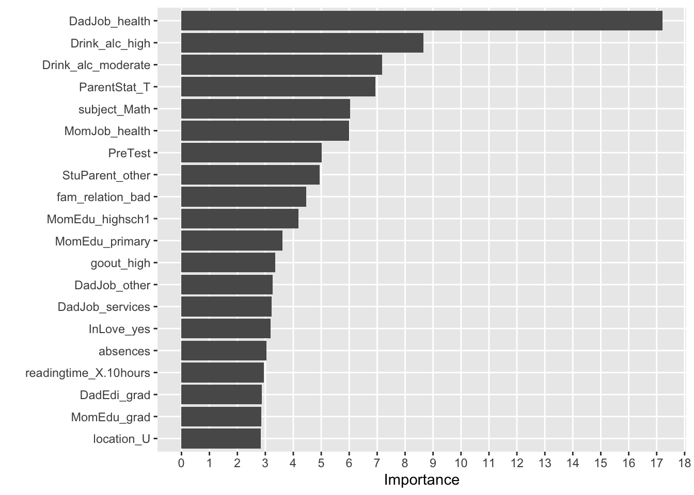